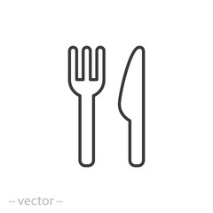

INTRO DUCTION

Established in May 1999 by famous spiritual and religious scholar Maulana Bashir Ahmed Farooqui, Saylani
Welfare International Trust was built on the fundamentals of breaking the cycle of poverty, alleviating
the financial troubles of the poor, giving people
a chance to live a dignified life and spreading happiness.
We are an organization that believes in lighting up the lives of underprivileged people across the world.
We endeavor to provide the best quality services in areas including food, education, medical and social
welfare free of cost to people living in the dark. With over 60 different sectors, we feed thousands of
hungry people each day, hundreds more are given the hope of life through medical health care, many are
educated to become leaders of tomorrow and several are given
the opportunity to stand on their feet financially.
Today, we are proud to say that our physical presence extends throughout Pakistan with a vast network of
125 branches operating in major cities including Karachi, Lahore, Islamabad, Rawalpindi, Hyderabad and
Faisalabad. Apart from Pakistan, we have overseas offices in the UK, USA and UAE as well. Our worldwide
branches are operating under the guidance of a team of over 2,000 working professionals
who help almost 125,000 people on a daily basis.
We strongly believe that a little help goes a long way and our work would not be possible without the
generous support of our valuable donors. Our local and international donors have graciously lent us a
hand by supporting our causes and
enabling us to serve the needs of people in need.

125,000
Daily Dastrakhan (Monthly)
7,500
Faimily Adoption(Monthly)
43,749
Medical(Monthly)
180,000
Education (Monthly)
What We are doing?
sadqah
Welfare
medical
dastrakhwan
ro plant
Education
MISSION AND UPCOMING PROJECTS
hapatitas
housing society
it-leteracy
tharparker
image gallary
.jpg)


Head Office,
A-25, Bahadurabad Chowrangi
Karachi, Pakistan
- UAN: 111-729-526
- (+0092-213) 4130786-90
- CELL: 92-311-1729526
- USA NO +1(716)941 7792
- UK NO (+44)115 970 6256
- info@saylaniwelfare.com